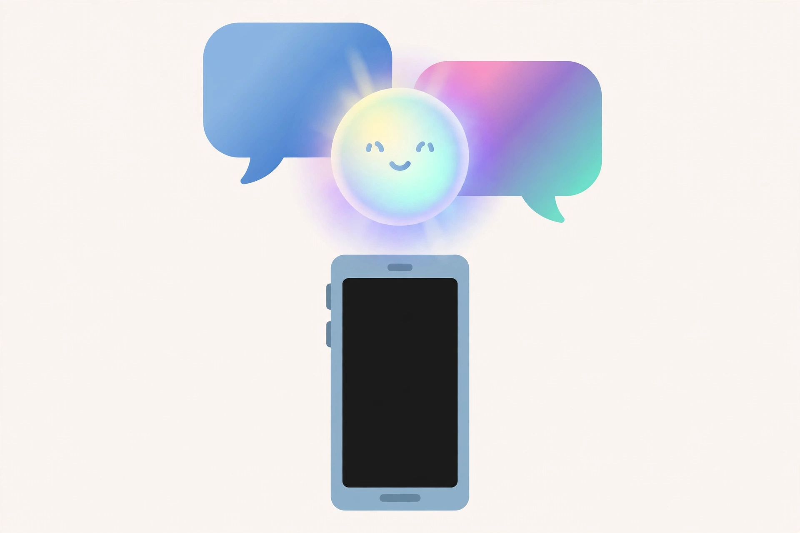

2026년 11월 6일

오랫동안 라이벌이던 애플과 구글이 AI에서 손을 잡았습니다. 애플이 구글의 제미나이 모델과 클라우드 기술을 차세대 애플 인텔리전스의 기반으로 쓰기로 했다고, 양사가 함께 발표했습니다. 다년간 이어지는 협력입니다.
가장 먼저 바뀌는 건 시리입니다. 제미나이를 기반으로 한 더 개인화된 새 시리가 올해 하반기 출시될 전망입니다. 애플은 기기 안에서 돌아가는 작은 모델과 프라이빗 클라우드 컴퓨팅은 자체 기술로 계속 가져가면서, 어렵고 큰 작업은 제미나이에 맡기는 이중 구조를 택한 것으로 보입니다.
아이폰 사용자 입장에서 가장 먼저 체감될 변화는 시리입니다. "전에 말한 걸 기억해서" 대답해 주는 비서가 드디어 제대로 나올지, 올해 하반기가 시험대가 될 것 같습니다.